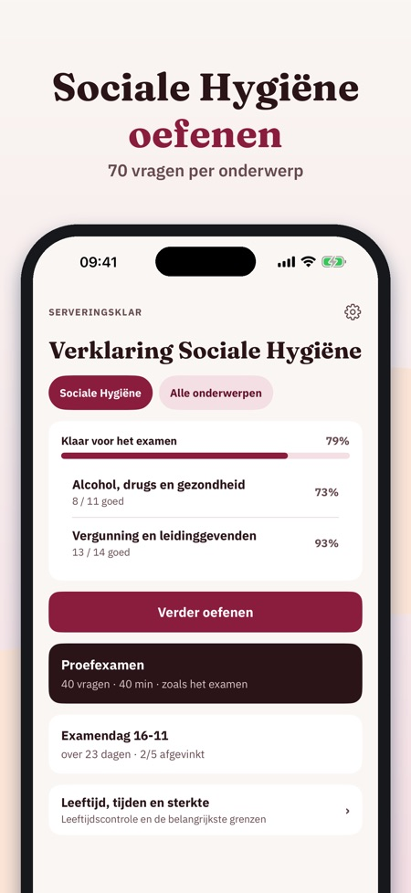
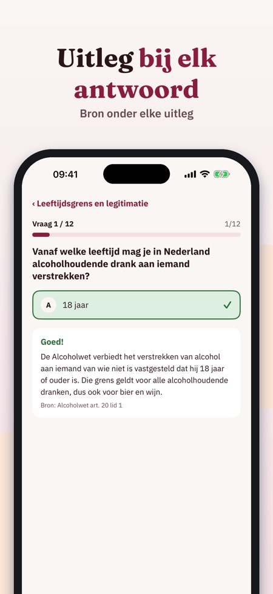
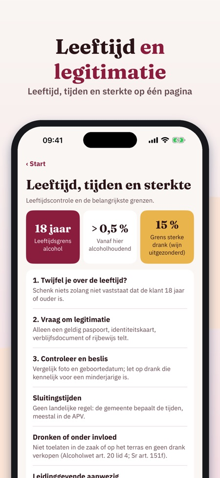

Sociale Hygiëne oefenexamen. Oefen voor het examen Sociale Hygiëne: vragen met uitleg, proefexamens en de regels voor leeftijd, legitimatie en tijden – in het Nederlands.



Serveringsklar helpt je oefenen voor het examen Sociale Hygiëne – met uitleg bij elke vraag, voor leidinggevenden in de horeca.
Je kunt 20 vragen, de begrippenlijst en de checklist zonder aankoop gebruiken. De volledige versie is een eenmalige aankoop die alle vragen, proefexamens en statistiek ontgrendelt. Geen abonnement.
Serveringsklar is onafhankelijk en niet verbonden aan de overheid of een examenorganisatie. Je examen doe je bij een examenorganisatie.